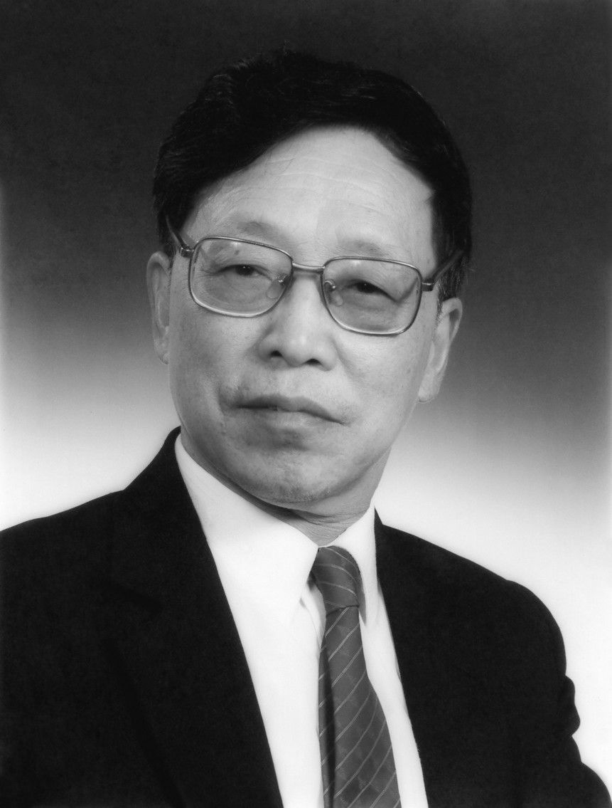

F-53铬雾抑制剂
CF₃CF₂(CF₂CF₂)₂OCF₂CF₂SO₃K
陈庆云2001年回顾所列结构
陈庆云带领研究组研制含醚键的F-53铬雾抑制剂，与实验厂、电镀厂协作，将抑雾剂从分子设计和合成推进到工厂试制、扩大试验与现场应用。研究过程中得到的含氟中间体，还为后续基础化学提供了原料。1982年10月，F-53研制项目获国家发明奖三等奖和上海市重大科研成果奖一等奖。
有机氟化学研究与传承
纪念陈庆云院士，讲述其研究道路与开拓性成就，保存原始文献与合作记录，传承治学精神。从四项主要学术成就走近陈先生，再沿八条科研成果线和一条学术传承线了解他的研究与学风，让珍贵资料成为后人学习与继续探索的起点。

CF₃CF₂(CF₂CF₂)₂OCF₂CF₂SO₃K
陈庆云2001年回顾所列结构
陈庆云带领研究组研制含醚键的F-53铬雾抑制剂，与实验厂、电镀厂协作，将抑雾剂从分子设计和合成推进到工厂试制、扩大试验与现场应用。研究过程中得到的含氟中间体，还为后续基础化学提供了原料。1982年10月，F-53研制项目获国家发明奖三等奖和上海市重大科研成果奖一等奖。
FSO₂CF₂COOMe → 引入–CF₃FSO₂CF₂COOSiMe₃ → 提供 :CF₂
陈庆云与合作者在1989年用甲酯MFSDA引入三氟甲基，后来这种甲酯被称为“陈试剂”。2000年的合作发展了硅酯TFDA，使二氟卡宾能在部分缺电子烯烃上构建偕二氟环丙烷。
氟烷基化合成 · 大环反应 · 结构与性质
陈庆云与合作者把有机氟方法带入卟啉化学：从已有大环的直接氟烷基化、按位置和数量引入三氟甲基，推进到选择性环化、结构与光物性研究；20π非芳香大环的分离和表征是其中的代表发现。
RF–X → RF·
陈庆云与合作者把溶剂、金属、亲核试剂、氧化剂和光照作为可比较的反应变量，形成多入口的氟烷基化方法体系；较难反应的特定含氟氯代物，是这条主线的后期拓展。
从求学、归国和科研攻关，到合作、育人与学术交流，理解陈先生的科学道路和治学精神。
从求学与科研任务，走近陈庆云与合作者共同展开的研究道路。
1929年1月25日出生于湖南沅江，在当地成长并开始求学。
1948年进入北京大学，1949年转入化学系，1952年毕业；在邢其毅等老师的课程与讨论中走近有机化学。
1952年毕业后进入中国科学院仪器馆，参与光学玻璃成分分析和标准电池试制。
在苏联科学院元素有机化合物研究所学习，受克鲁扬茨和甘巴里扬指导，研究六氟丙酮反应，1960年获副博士学位后回国。
与克鲁扬茨、甘巴里扬开展六氟双酚A制备研究。第117491号说明书记载了具体方法及共同署名；申请日为1958年7月19日。
回国后加入蒋锡夔领导的团队，承担六氟丙烯等材料任务中的研究；已有的氟橡胶1号前期成果与其后加入的工作分别说明。
1963年7月，人员与仪器一起南迁，在上海有机所继续研究，使既有实验经验与上海的原料和工业条件接续。
围绕工厂铬雾问题，研究组、实验厂与电镀厂参与研制和应用工作；1977年三单位署名与1981年厂试图注各自保留。
在含氟磺酸及其衍生物、二氟卡宾、三氟甲基化与单电子转移等方面开展系列研究，各体系与合作者分别著录。
当选中国科学院院士，参与学术期刊、会议与人才培养；这些学术服务与具体科研论文分别整理。
与郭灿城、刘超及其他合作者开展含氟卟啉等研究，原论文保留完整署名；不同分子和性质逐项区分。
在延伸特色试剂研究的同时，关注长链含氟表面活性剂的持久性与替代问题，留下需要后人继续整理的研究线索。
2023年3月2日在上海逝世。今天继续保存他的开拓性成果、合作经历与治学精神。
陈庆云参与含氟单体、氟利昂代用品等研究，从原料与合成路线推进到材料和应用问题；各项成果由相应团队共同完成。
1966 年 PFtB 原始研究由陈庆云、蒋锡夔、陈秉启与梁梦兰共同署名。专题以四作者为起点，并分别标注后来引用者。
阅读成果汇总，了解各项工作的科学问题、具体贡献和合作分工。
留苏期间，陈庆云与合作者系统研究六氟丙酮的加成及衍生转化，制得双酚AF并提出单体用途。他们还通过含氟烯烃的加成方向和噁唑酮开环，考察三氟甲基对反应性的影响。
陈庆云与蒋锡夔等解决六氟丙烯的制取与低温分离，支撑氟橡胶2号、3号研制；迁沪后与同事研制调聚氟溴油，并由实验厂接续生产。后续合作又研究了偏氟乙烯调聚物的链长、端基和转化。
陈庆云、蒋锡夔、陈秉启、梁梦兰研究全氟叔丁基碘和溴化物的制备、结构与反应。产物对照支持作者提出亲核试剂先作用于卤素的解释；紫外光谱及化学证据则用于在经验关系适用的前提下讨论基团的吸电子能力。
陈庆云组织605研究小组开辟F-115制备路线，用它与F-22配制已有配方F-502。F-115研制项目于1980年2月获上海市重大科研成果奖三等奖。后来团队发展HFC-134a液相工艺，林永达、杨映松等推进连续中试，再与材料和设备单位解决冷冻机油配套及整机试用。
陈庆云与合作者比较含氟磺酸酯的硫—氧和碳—氧断裂，发展多种二氟卡宾前体和三氟甲基化体系。陈庆云与吴生文开发甲酯MFSDA的三氟甲基化用途。其小组与多比尔团队共同发展硅酯TFDA，将二氟卡宾加成用于部分缺电子烯烃。
对应的主要学术成就 · 陈试剂与二氟卡宾试剂
陈庆云与合作者将二氟卡宾用于含氟小环；在卟啉方向，从直接氟烷基化、按位三氟甲基化推进到选择性环化、稠合大环和20π非芳香大环，并继续探索含三键的新大环。晚年的共同研究还涉及脱氧氟化、氟磺酰化及含氟功能材料的合成与物性。
卟啉研究分支对应的主要成就 · 氟烷基卟啉
2007年，刘超、沈冬梅、陈庆云共同分离并表征20π电子非芳香isophlorin，把含氟合成、选择性环化与大环结构性质研究连接起来。
从材料研制与工程转化，到留苏训练和国际交流，沿具体人物与行动理解成果怎样形成、接续与传承。
六氟丙烯从裂解产物走向材料原料，需要制取、低温分离与同事的协作。
A02（含氟单体、氟橡胶与氟油）F-53从实验室走向工厂，陈庆云与顾子恺、实验厂和电镀厂共同衔接化学研究与工程转化。
A04（F-53铬雾抑制剂）制冷剂的应用把合成、中试、配套冷冻机油和冰箱试用连在一起，也连接了不同人员与单位。
A05（制冷剂与配套技术）丹娘的日常指导与克鲁扬茨的严格要求，把样品操作、独立思考和平等讨论连成研究训练。
A01（全氟酮化学：六氟丙酮与双酚AF）A09（学科建设与人才培养）1979年赴美，陈先生在杜邦、3M等企业报告F-53相关研究，让具体工作成为国际交流的话题。
A04（F-53铬雾抑制剂）A09（学科建设与人才培养）一册收集装订的论文与一封祝贺邮件，留下日本卟啉同行对陈先生具体研究的关注与回应。
A08（交叉研究与晚年拓展）A09（学科建设与人才培养）从资料阅读、选题讨论到论文指导，了解陈先生与学生共同探索、培养研究判断的具体经历。
A09（学科建设与人才培养）成果的意义不仅在于结论，也在于它由哪些观察、解释和后来的工作支撑。
在每个专题中辨认研究对象、时代背景和作者实际解决的具体问题。
把原作的实验观察、作者解释与实际测试条件联系起来，理解一项结论由怎样的依据支撑。
原始研究、引用、复核与后续采用各有作者和证据，不将先后出现自动连成因果。
历史研究与平台新增的AI辅助整理分别呈现；模型探索按其实际完成的范围介绍。
沿论文、项目与合作节点，了解研究问题怎样逐步发展；申请、发表与工业应用的时间分别理解。
第117491号说明书记载六氟双酚A制备方法，由克鲁扬茨、陈庆云、甘巴里扬共同署名；申请日为1958年7月19日。 A01（全氟酮化学：六氟丙酮与双酚AF）
克鲁扬茨、陈庆云、甘巴里扬系统介绍六氟丙酮的多类反应，并报告双酚AF制备。阅读第一报 →
含氟共轭体系论文以陈庆云为第一作者，与同年噁唑酮论文分列。A01（全氟酮化学：六氟丙酮与双酚AF）
回国加入氟材料研究团队，1963年随课题组调入上海。 A02（含氟单体、氟橡胶与氟油）
Rokhlin、Gambaryan、陈庆云、Knuniants共同研究含氟噁唑酮的制备与衍生转化。
四作者的原始论文围绕结构、反应和电子效应展开。进入专题说明 →
致冷剂小组报道F-115的制法，为F-115与F-22组成的既有制冷剂F-502提供了组分。工质制备与组分 →
全氟叔丁基碘进入偏氟乙烯调聚，与 1966 年研究分列。A02（含氟单体、氟橡胶与氟油）
图注记录上海光明电镀厂测试。A04（F-53铬雾抑制剂）
《人民日报》记录技术并载历史测算。A04（F-53铬雾抑制剂）
陈亚雄参与溶剂效应研究，杨震宇参与铜体系的含氟烯烃合成。单电子转移与方法发展 →
Qing-Yun Chen 与 Sheng-Wen Wu 报道甲酯在铜体系中的三氟甲基化用途。查看书目和边界 →
甲酯用于具体甾体衍生物三氟甲基化。A06（磺酸酯、二氟卡宾与三氟甲基化）
陈庆云小组与Dolbier团队发展硅酯TFDA，其制备及含氟三元环应用进入《Organic Syntheses》。硅酯与二氟卡宾 →
陈庆云回顾 F53 研制及相关研究脉络；它不是每项具体技术路径的原始档案。查看回顾来源 →
直接氟烷基化、按位三氟甲基化、2006年稠合大环和2007年20π非芳香大环互相接续，2008年又拓展到N-confused卟啉。合成—环化—性质研究进程 →
甾体三氟甲基化方法进入 Organic Syntheses，核查限所载方法。A06（磺酸酯、二氟卡宾与三氟甲基化）
脱氧氟化、磺酰氟合成和表面性质等论文按各自对象与合作者分开记录。查看合著研究 →
另报含三键的 18π 共轭大环。A08（交叉研究与晚年拓展）
从原始文献、化学对象与具体数据出发，说明AI方法怎样服务于八条科研成果线。
以多语原文对齐、结构消歧和计量复核，梳理全氟酮反应中的具体问题。
研究资料与问题 →关联单体、牌号与调聚文献，辨明材料对象和团队贡献。
研究资料与问题 →辅助原表提取与单位核对，用可复核程序检查效应比较的适用范围。
研究资料与问题 →关联论文与厂试史料，核对产品身份、应用条件和数字口径。
研究资料与问题 →消歧制冷剂与配套材料，梳理制备、中试和整机研究的证据。
研究资料与问题 →对照结构、条件与断键观察，区分试剂身份并追踪已有机理研究。
研究资料与问题 →按底物、溶剂和引发条件组织证据，梳理不同活化体系的研究问题。
研究资料与问题 →关联具体骨架、表征与实测性质，为跨专题阅读和后续提问建立索引。
研究资料与问题 →已开展的资料核读、数值重放与模型探索按实际记录列示；可用方法与拟议问题分别说明。具体结果、适用范围和待核证据见各线研究页，未来工作先查新并论证方法，再决定是否开展。
A09（学科建设与人才培养）作为独立的学术传承线，另见人物与传承。
完整文献书目汇于页末；各专题直接展开科学问题、研究过程与合作故事。
同一研究者在不同出版记录中可能有不同转写；仍需以年代、机构和合作者确认，不能自动合并同名作者。
I. L. Knunyants、陈庆云、N. P. Gambaryan共同署名第一报。第一报原文与成果 →
俄文档案中的作者为 E. M. Rokhlin、N. P. Gambaryan、Chen Qing-yun、I. L. Knuniants。
论文作者署名包括 I. I. Knunyants、N. P. Gambaryan、Ch’en Ch’ing-yun、E. M. Rokhlin；摘要讨论六氟丙酮反应和亲电性。
国际期刊共同综述的作者包括 N. P. Gambaryan 等及 Chen Ching-yun；其参考文献列出 1960 年学位论文。
发表、合作、复核、评价和采用是不同关系；每个案例只说明它实际支持的范围。
F. Tian、W. R. Dolbier Jr与Q.-Y. Chen等共同报道TFDA作为二氟卡宾来源。TFDA是硅酯，与甲酯MFSDA分别理解。 查看记录 ↗
Dolbier、F. Tian、J.-X. Duan、Q.-Y. Chen提交的TFDA方法，由Victoria D. Bock、David P. Richardson、Steven Wolff独立核查。核查限于原文方法，不代表全面工业验证。 查看条目 ↗
Sarah L. Clarke和Gerard P. McGlacken专题评述MFSDA，使其合成用途继续成为后续讨论的对象；评述与独立实验采用分别理解。 查看文献 →
2021年国际合著方法总览介绍1989年工作。该综述包含中国合作者，其评述与完全独立团队的实验复核分别理解。 查看文献 →
Jiyoon Song、Vikas R. Aswar、Dnyandev B. Jarhad、Lak Shin Jeong把陈试剂用于核苷糖环三氟甲基化。该新方法归后续作者，并不直接证明临床有效或商业化。 查看成果记录 ↗
此类别暂无条目；可选择“全部”恢复。
以下为陈庆云参与的共同研究，分别连接含氟分子构建、反应性与性质问题。
Shiyu Zhao 等与 Yong Guo、Chengying Wu、Qing-Yun Chen 合著，研究由特定含氟醚羧酸衍生的试剂。副产物利用或原位生成不等于已证明绿色或无害。
Yongan Liu 等、Qing-Yun Chen 与 Chao Liu 共同报道一种具体构件方法；不据此将整个 SuFEx 领域或药物应用归为其发明。
Shiyu Zhao、Yong Guo等与Qing-Yun Chen共同研究含CF₂O单元的全氟醚羧酸钾盐，拓展多类含氧底物的脱氧氟化；该体系不代表处理任意含氟废物的通用技术。
Longhao Dai 等、Yong Guo 与 Qing-Yun Chen 的共同论文比较相关物质的表面性质。表面表现不能推导低毒或全生命周期安全。
甲酯、酸型和硅酯分开；同一实体的新用途不自动证明引用关系或方法继承。
陈庆云与 S.-W. Wu 报道铜体系中的三氟甲基化用途。查看文献 →
2016年，Wei Yu、Xiu-Hua Xu、Feng-Ling Qing用甲酯MFSDA开展可见光自由基二氟烷基化；2025年首尔大学团队把该试剂用于核苷糖环研究。这些新方法属于相应后续作者。 查看文献 →查看文献 →
Pablo J. Cabrera、Christophe Allais等的工艺研究使用酸型试剂，与甲酯MFSDA分别理解；其方法与放大结果归该论文作者。 查看论文 ↗
Xue Li、Yuxin Rao等研究以MFSDA名称介绍的电解液添加剂。用途归2026年作者；名称对应不能单独证明结构同一、直接方法传承、量产或普遍安全。 查看机构记录 ↗
先梳理已有专业研究，再核对原始材料与可检验的问题；候选设想须经过查新和方法论证。
陈试剂的既有机理研究与近期回顾均保留原作者和核查层级，具体对照与待核事项见A06（磺酸酯、二氟卡宾与三氟甲基化）研究资料。
本平台纪念陈庆云院士，介绍其生平、开拓性成就与科学精神，保存原始文献和合作记录。平台新增AI辅助整理与研究另设专区。
各专题保留原作者与参考资料；原始成果、后续用途和平台AI资料整理分别呈现。
平台围绕陈庆云院士的生平、学术成果与传承整理资料，保存原始成果与合作记录。
若发现错配，请保存对应页面与来源位置，通过实际维护渠道交给维护者核对。本网站不提供线上提交接口，也不复制未经授权的论文全文或人物材料。
按作者、题名或关键词查找文献，书目保留原始与后续研究的作者归属。
未找到符合条件的来源。请更换关键词或清除查询。
朱晶、刘超；2024；中国科学技术出版社，2024 年 6 月第 1 版；ISBN 978-7-5236-0741-1。
克鲁扬茨、陈庆云、甘巴里扬；1958（申请）；申请号604379/23；申请日1958-07-19。
肖关根；1982；人民日报，1982-04-08，第 3 版。
中国科学院网站专题；2024；中国科学院 科技自立自强之路，2024-06-21。
上海光明电镀厂、中国科学院上海有机化学研究所、江苏省泰州市电化厂；1977；化学学报 35, 209–220。
新华社；1989；人民日报，1989-02-11，第 3 版。
陈庆云、朱蓉仙、李宗珍、王珊娣、黄维垣；1982；化学学报 40(4), 337–352。
陈庆云、朱士正；1982；化学学报 40(7), 670–673。
Li-Mei Jin、Zhuo Zeng、Can-Cheng Guo、Qing-Yun Chen；2003；Journal of Organic Chemistry。 DOI：10.1021/jo0207269。
Yongan Liu 等，含 Qing-Yun Chen；全体作者见论文；2017；Angewandte Chemie International Edition。 DOI：10.1002/anie.201709663。
Shanwei Guo、Yong Guo、Meiwei Huang、Libo Qian、Zhaoben Su、Qing-Yun Chen、Chengying Wu、Chao Liu；2023；Langmuir。 DOI：10.1021/acs.langmuir.3c01623。
Chen Qing-yun、N. P. Gambaryan、I. L. Knuniants；1960；Dokl. Akad. Nauk SSSR 133(5), 1113–1116。
陈庆云、马振中、蒋锡夔、张元发、贾世茂；1980；化学学报 38(2), 175–184。
Perfluorosulfonic Acid Group, Shanghai Institute of Organic Chemistry, Academia Sinica；1978；Scientia Sinica 21, 773–782。
全氟磺酸组；1979；化学学报 37，315–324。
陈庆云、朱士正；1983；化学学报 41(11), 1044–1057。
Xiang-Shu Fei、Wei-Sheng Tian、Qing-Yun Chen；1998；Journal of the Chemical Society, Perkin Transactions 1, 1139–1142。 DOI：10.1039/A706552C。
Xiang-Shu Fei、Wei-Sheng Tian、Kai Ding、Yun Wang、Qing-Yun Chen；2010；Organic Syntheses 87, 126。 DOI：10.15227/orgsyn.087.0126。
Chao Liu、Qing-Yun Chen；2005；European Journal of Organic Chemistry 2005(17), 3680–3686。 DOI：10.1002/ejoc.200500027。
Fei Hao、Tian Zhang、Donghai Yu、Xiaodeng Yang、Hua-Wei Jiang、Ji-Chang Xiao、Qing-Yun Chen；2022；Organic Letters 24(8), 1716–1721。 DOI：10.1021/acs.orglett.2c00356。
Wei Xu、Qing-Yun Chen；2002；Journal of Organic Chemistry 67(26), 9421–9427。 DOI：10.1021/jo020431v。
Cheng-Pan Zhang、Zong-Ling Wang、Qing-Yun Chen、Chun-Tao Zhang、Yu-Cheng Gu、Ji-Chang Xiao；2010；European Journal of Inorganic Chemistry, 3419–3422。 DOI：10.1002/ejic.201000171。
Gang Zhao、Hao Wu、Zhiwei Xiao、Qing-Yun Chen、Chao Liu；2016；RSC Advances 6, 50250–50254。 DOI：10.1039/C6RA09011G。
Kai Wu、Qing-Yun Chen；2002；Journal of Fluorine Chemistry 113, 79–83。 DOI：10.1016/S0022-1139(01)00469-9。
陈庆云、蒋锡夔、陈秉启、梁梦兰；1966；化学学报 32(1),18–25。
E. M. Rokhlin、N. P. Gambaryan、Chen Qing-yun、I. L. Knuniants；1960；Doklady Akademii Nauk 134(6),1367–1370。
I. I. Knunyants、N. P. Gambaryan、Ch’en Ch’ing-yun、E. M. Rokhlin；1962；Bulletin of the Academy of Sciences of the USSR, Division of Chemical Science 11,633–640。 DOI：10.1007/BF00904766。
N. P. Gambaryan等，含Chen Ching-yun；1966；Angewandte Chemie International Edition in English 5,947–956。 DOI：10.1002/anie.196609471。
陈庆云；2001；有机化学 21(11),805–809。
Qing-Yun Chen、Sheng-Wen Wu；1989；J. Chem. Soc., Chem. Commun.,705–706。 DOI：10.1039/C39890000705。
Zheng-Yu Long、Qing-Yun Chen；1999；J. Org. Chem. 64(13),4775–4782。 DOI：10.1021/jo9900937。
F. Tian等，含W. R. Dolbier Jr与Q.-Y. Chen；2000；Organic Letters 2(4),563–564。 DOI：10.1021/ol0055622。
W. R. Dolbier Jr、F. Tian、J.-X. Duan、Q.-Y. Chen；2003；Organic Syntheses 80,172–176。 DOI：10.15227/orgsyn.080.0172。
Chao Liu、Dong-Mei Shen、Qing-Yun Chen；2007；J. Am. Chem. Soc. 129(18),5814–5815。 DOI：10.1021/ja070855c。
Siwen Wang等；2013；Environmental Science & Technology 47(18),10163–10170。 DOI：10.1021/es401525n。
Wei Yu、Xiu-Hua Xu、Feng-Ling Qing；2016；Organic Letters 18(19),5130–5133。 DOI：10.1021/acs.orglett.6b02580。
Sarah L. Clarke、Gerard P. McGlacken；2017；Chemistry – A European Journal 23(6),1219–1230。 DOI：10.1002/chem.201602511。
Shiyu Zhao等，含Yong Guo、Chengying Wu与Qing-Yun Chen；2020；Organic Letters 22(21),8634–8637。 DOI：10.1021/acs.orglett.0c03238。
Yongan Liu等，含Qing-Yun Chen与Chao Liu；2020；Organic Letters 22(6),2281–2286。 DOI：10.1021/acs.orglett.0c00484。
Shiyu Zhao、Yong Guo等，含Qing-Yun Chen；2021；Chinese Journal of Chemistry 39,1225–1232。 DOI：10.1002/cjoc.202000662。
Longhao Dai等，含Yong Guo与Qing-Yun Chen；2021；Journal of Fluorine Chemistry 246,109793。 DOI：10.1016/j.jfluchem.2021.109793。
Robert Britton、Veronique Gouverneur、Jin-Hong Lin等；2021；Nature Reviews Methods Primers 1,47。 DOI：10.1038/s43586-021-00042-1。
黄广龙、薛小松；2024；化学学报 82(2),132–137。 DOI：10.6023/A23090434。
Pablo J. Cabrera、Christophe Allais等；2024；Organic Process Research & Development 28(4),1119–1128。 DOI：10.1021/acs.oprd.3c00493。
Jiyoon Song、Vikas R. Aswar、Dnyandev B. Jarhad、Lak Shin Jeong；2025；Organic Letters 27(9),2215–2219。 DOI：10.1021/acs.orglett.5c00325。
Xue Li、Yuxin Rao等，含Stefano Passerini与Shan Fang；2026；ACS Applied Materials & Interfaces 18(35),47565–47577。 DOI：10.1021/acsami.6c07324。
苏雪、丁婧、曾广原、庞婉、刘超；2026；化学试剂 网络发表。 DOI：10.13822/j.cnki.hxsj.2026.0211。
中国科学院上海有机化学研究所；2023；机构生平资料。
中国科学院上海有机化学研究所；机构研究范围。
原始研究与后续方法分别列出。
Zhan-Ling Cheng、Qing-Yun Chen；2006；Synlett (3), 478–480。 DOI：10.1055/s-2006-926266。
Hua-Wei Jiang、Qing-Yun Chen、Ji-Chang Xiao、Yu-Cheng Gu；2008；Chemical Communications, 5435–5437。 DOI：10.1039/B811831K。
专题文献：2 / 2 条
采集工程项目办公室／中国科协创新战略研究院，2021-10-29；中国科学家博物馆。
林永达、陈庆云，1998；化学进展，10(2)：228起。
中国科学院上海有机化学研究所；专利登记。
黄小庭、陈庆云，2001；J. Org. Chem.，66(13)：4651–4656。DOI：10.1021/jo010178j。
中国科学院上海有机化学研究所；机构历史图集。
中国科学院上海有机化学研究所，2009-02-20；党政办公室。
中国科学院上海有机化学研究所，2019-01-28；党政办。
中国科学院上海有机化学研究所；机构历史名单。
I. L. Knunyants、Ch’en Ch’ing-yun（陈庆云）、N. P. Gambaryan，1960；9：647–653。DOI：10.1007/BF00910798。
中国科学院，2024-03-28；中国科学院人物专题。